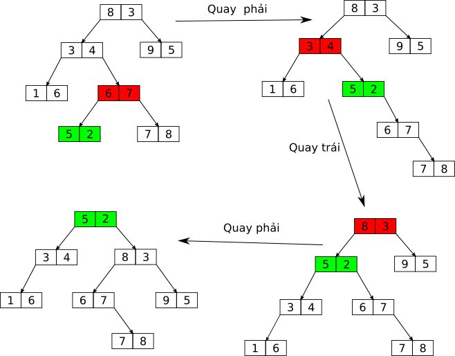

Treap - Cây tìm kiếm nhị phân ngẫu nhiên
Treap - Cây tìm kiếm nhị phân ngẫu nhiên
Treap - Cây tìm kiếm nhị phân ngẫu nhiên
Contents
Treap là một cấu trúc kết hợp giữa cây tìm kiếm nhị phân và heap. Nếu bạn chưa biết về cây tìm kiếm nhị phân, có thể đọc bài viết này: /algo/bst.
Treap kết hợp với khóa ngẫu nhiên sẽ cho ta một cấu trúc gọi là “Cây tìm kiếm nhị phân ngẫu nhiên”, có độ phức tạp trung bình cho các thao tác là . Vì vậy, treap có thể dùng để thay thế các cấu trúc như Slay tree, Red-black tree,…
Bài viết này sẽ bỏ qua các khái niệm cũng như cách cài đặt một cây tìm kiếm nhị phân cơ bản vì đã được đề cập ở đây.
Nhắc lại về heap
Heap cũng là một cây nhị phân, khác với cây tìm kiếm nhị phân, heap có tính chất:
- Khóa của nút cha luôn luôn lớn hơn các nút con (đối với max heap)
Đối với min heap, khóa của nút cha nhỏ hơn của các nút con.
Mục đích của heap là để tìm min/max, thường được dùng trong thuật toán như Dijsktra, Prim. Cấu trúc priority_queue của C++ được cài bằng cấu trúc heap.
Định nghĩa treap
Như đã nói ở trên, treap là kết hợp giữa cây tìm kiếm nhị phân và heap. Treap đơn giản là một cây nhị phân có 2 khóa, trong đó một khóa thỏa mãn tính chất của heap, còn một khóa thỏa mãn tính chất của cây tìm kiếm.
Ví dụ:
Hình trên là cây treap với số bên trái là khóa tìm kiếm, bên phải là khóa heap.
Treap thường được dùng làm cây nhị phân tìm kiếm ngẫu nhiên, khóa heap có vai trò giữ cho cây không quá cao. Cụ thể như sau:
- Khi cần thêm một nút có khóa vào cây, ta chọn ngẫu nhiên một số để làm khóa heap.
- Các thao tác thêm, xóa, tìm kiếm được thực hiện như trên cây tìm kiếm bình thường.
- Sau khi thêm, xóa nút trên cây, ta sẽ thực hiện một vài thao tác để đảm bảo tính chất heap của cây không bị vi phạm.
Cài đặt cây:
#include <stdlib.h>
struct Node {
int key, priority;
Node *left = nullptr, *right = nullptr;
Node(int key) : key(key), priority(rand()) {}
};
Khóa tìm kiếm là key, khóa heap là priority. Khi tạo mới một nút, ta tự động lấy ngẫu nhiên
giá trị của khóa heap.
Khi tại một nút có tính chất heap bị vi phạm, ta gọi đó là mất cân bằng.
Thao tác tìm kiếm
Thao tác tìm kiếm được thực hiện như bình thường, không cần quan tâm đến khóa heap:
#define left root->left
#define right root->right
Node *find(Node *root, int key) {
if (!root) return nullptr;
if (key > root->key) return find(right, key);
if (key < root->key) return find(left, key);
return root;
}
Để code nhìn ngắn gọn, ta define left thành root->left, và right thành root->right.
Thao tác xoay cây
Như đã nói ở trên, sau khi thêm hoặc xóa nút, ta sẽ thực hiện một vài thao tác để cây không vi phạm tính chất heap. Các thao tác này chính là thao tác xoay cây, gồm 2 loại: xoay trái và xoay phải.
Hình sau minh họa việc xoay trái và phải tại nút gốc:
Cài đặt (C++):
Node *rotate_right(Node *node) {
Node *x = node->left, *t = x->right;
x->right = node;
node->left = t;
return x;
}
Node *rotate_left(Node *node) {
Node *x = node->right, *t = x->left;
x->left = node;
node->right = t;
return x;
}
Thao tác thêm
Thao tác thêm một nút có khóa K được thực hiện tương tự như cây nhị phân tìm kiếm bình
thường, sau khi thêm ta kiểm tra xem tính chất heap có bị vi phạm không. Nếu có, ta thực hiện
phép quay phù hợp để cân bằng lại cây. Cụ thể, code như sau:
#define left root->left
#define right root->right
Node *insert(Node *root, int key) {
if (!root) return new Node(key);
if (key < root->key) {
left = insert(left, key);
if (root->key > left->key)
root = rotate_right(root);
} else if (key > root->key) {
right = insert(right, key);
if (root->key > right->key)
root = rotate_left(root);
}
return root;
}
Ví dụ:

Trong hình trên, khóa tìm kiếm nằm bên trái, còn khóa heap nằm bên phải. Nút màu xanh nút vừa được thêm vào và nút màu đỏ là nút bị mất cân bằng và ta sẽ thực hiện xuay tại đó. Ta thấy sau 3 lần xoay thì cây đã trở nên cân bằng.
Ứng dụng
Một số bài tập có thể dùng Treap để giải:
- C11SEQ - Dãy số: /code/135/
- Array and simple queries
- Median Updates